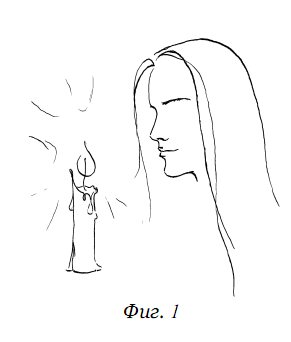

Беседа 702 от 3877 · Беинса Дуно
Трите състояния у човека
Седемнадесета лекция от Учителя
13 февруари 1924 г., София
Тайна молитва
Прочете се резюме върху темата „Най-щастливият ден през годината“.
Упражнение: 1. Ръцете на гърдите. Дясната ръка настрана, хоризонтално, в кръг, пред гърдите. После лявата ръка настрана, хоризонтално, в кръг, пред гърдите. Това упражнение се повтаря няколко пъти ту с дясната, ту с лявата ръка.
2. Двете ръце нагоре, в кръг, допрени над главата горе. Отварят се ръцете малко и пак се поставят над главата. Това се прави с постепенно усилване и пак със забавяне (няколко пъти), ръцете настрана и бавно се отпускат надолу.

Във физиката имате един закон, че силата, енергията Е е равна на обема на масата Т, т. е. в материята всякога стават известни прояви. В материята има няколко движения. Срещат се вълни, които имат височина, имат ширина, имат и брой на трептенията. Следователно енергията е равна и на височината, и на ширината, и на броя на трептенията. Физиката казва, че енергията е равна на масата. Този физически закон отчасти е верен. Някой път обемът на масата е по-голям от енергията, а в някои случаи силата на енергията е по-голяма от масата. Какво е приложението на този закон? Известна енергия може да се прояви в известна маса – известен обем има тя. Да допуснем, че вземете човешкото тяло. И в него има известна енергия, но енергията може да бъде специфична, както се взема във физиката. Каквато и да е тя, от нея всякога излизат известни сили. На какво е проява самата енергия в света? Зад енергията седи една разумна сила. Следователно вие трябва да знаете, че между отношенията на енергията и масата постоянно стават промени. Тези промени може да имат разни направления. Някой път движението на енергията може да спомага за вашето морално повдигане, а някой път тази енергия спомага за вашето морално падане. Да допуснем, че вие сте енергичен, способен, умен и печелите пари. Парите – това са масата. Тази маса, като влезе вътре във вашата каса, започва да ви изкушава, почвате да се удоволствате по разни начини. Един ден масата намалява, т. е. парите изчезват и остава само енергията вътре във вашия ум. Сега във физическия свят всички физици казват, че човек трябва да има достатъчно маса, в която енергията може да се прояви, т. е. постоянно трябва да има гориво за живота си. Туй е само във физическия свят.
Защо се менят състоянията в човека? Всяка една промяна, каквато и да е тя, която става във вас, означава, че известни разумни същества са влезли във вас да работят, взели са участие в живота ви – нищо повече! Вземете един прост факт. Вие седите сам в стаята си, имате каса, имате си и пари в нея. Отворите я, гледате си парите: сам сте, спокоен сте. Вадите си парите, броите ги, радвате им се, после пак ги затворите. Един ден дойде някой ваш приятел и ви завари тъкмо в момента, когато вашата каса е отворена. Вие от благородство не можете да затворите касата си, излизате отвън, но у вас се заражда едно малко безпокойство. Защо? – Възможно е той да бръкне в касата, да вземе нещо от нея. Вашият приятел си замине, вие веднага преброявате парите си и казвате: „А, точно са. Честен човек е значи, не е взел нищо.“ Сега у вас се поражда едно доверие към него. Този ваш приятел дойде втори, трети път и т. н. Питам: може ли да проверите след колко пъти, ако дойде той, ще изчезне туй безпокойство, туй недоверие към него? Ако има закон, ще може ли точно да изчислите това? Има закон, чрез който то ще може да се определи. Вземете който и да е градинар: той може да ви определи точно след колко години една ябълка ще достигне върха на своето развитие, т. е. крайния предел на развитието си.
Така също може да се определи след колко години един човек може да достигне върха на своето развитие, бил той млад момък или някоя млада мома. По същия закон ние можем да определим математически след колко време човек ще достигне предела на своето растене, т. е. кога ще спре неговият растеж. Тогава питам: след колко години може да дойде пределът на вашето съмнение и неверие? Вярата и съмнението също имат свой предел. И най-голямата вяра да имате у някого, достатъчно е само един път да задигне парите от касата ви, за да се разколебае веднага вашата вяра. Следователно вашата вяра не е стабилна. Казвате: „Нашата вяра трябва да е постоянна.“ Питам: ако вашата вяра се разколебава, това вяра ли е, стабилна ли е тя? Не само спрямо хората, но вашата вяра се разколебава и спрямо Бога. Вие имате вяра в Бога, докато всичко ви върви добре. Казвате: „Бог е добър, справедлив.“ Но дойдат някои малки изпитания, казвате: „Абе, джанъм, тази работа не върви.“ Значи и у Бога имаш съмнение. Е, ако критикуваш Бога в себе си, с каква мярка може да Го критикуваш? Коя е тази абсолютна мярка? Ако ти имаш съмнение в Бога, туй съмнение трябва да го измерваш с някаква величина. Ние казваме: „Този човек е честен, а онзи не е честен.“ И единия, и другия трябва да мерим с известна мярка. Тия неща са относителни.
Не, един учен човек или един християнин трябва да различава своите състояния. Има състояния чисто физически, има състояния душевни, има и състояния умствени. Физическите състояния се нарушават от физически предмети. Например вие имате едно прекрасно състояние на духа. Понеже касата ви е пълна, казвате: „А, аз съм достатъчно спокоен човек, аз не се тревожа.“ Не се тревожите, понеже имате ниви, говеда, но един ден някой изпразни касата ви и туй състояние се изменя. Значи туй състояние е физическо: взети са парите ви, изменя се състоянието ви, изгубвате спокойствието си. Туй спокойствие се дължи само на парите, на нивите, на къщите. Има и друг вид състояние. Вие се мислите за благороден човек, човек от знатно произхождение, но сте беден, нямате пет пари в джоба си, работите честно, имате спокойствие. Но някой казал обидна дума за вас и веднага се изменя вашето състояние. Значи в този случай вие усещате, като че някой е взел нещо от вашата чест. Аз наричам туй изменение на състоянието душевно състояние. Обидните думи изменят вашето състояние.
Да допуснем сега, че имате известно умствено състояние. Например имате някаква самоувереност в известни научни теории, които вие сте създали, но един ден намерите, че има грешка във всичките ви теории и изчисления и във вашия ум стане едно изменение. Туй, което сте твърдели, туй, което едно време е съставлявало за вас удоволствие, днес в него намирате една погрешка и веднага във вас се започва една умствена пертурбация. В света има и други състояния, за които сега няма да се спирам да ви говоря. Значи всички състояния у вас имат свой специален обект, който вие може да измените. А ние сега туряме всички тия състояния под еднакъв знаменател. Не е така. Следователно онзи, който иска да работи съзнателно, трябва да надрасне тези три вида състояния. От това, че е загубил парите си, че са му казали обидна дума, че е претърпял умствена загуба, той не трябва да се изменя, а трябва да знае, че това е в реда на нещата. Тия три състояния са горящата свещ. Сега някой може да пита: „Не може ли без свещ вкъщи?“ – Може, как не! Мога да впрегна моя мозък да ми свети, докато мисля, а като престана да мисля, да настане тъмнина. Значи мисля ли – свети мозъкът ми; престана ли да мисля – тъмнина настава, почивам си. Да допуснем, че някой ви вземе свещта. Казвате: „Какво право има да ми взема свещта?“ – Е, взел я, той има право. Тази свещ всеки има право да я вземе и да измени вашето състояние. Но кой е онзи, който може да вземе свещта, която нося в моя мозък? Тази свещ не може да се краде. По някой път някои се опитват да вземат тази свещ, но не могат – в редки случаи само успяват. И ако живеем добре, разумно в живота си, никой не ще може да ни вземе тази свещ. Някои говорят за добрия живот. Добрият живот започва само тогава, когато почнем да си служим не с външни свещи, но със свещта на нашия ум. Когато той свети, ние сме в безопасност. Сега ние можем да завъртим ключовете на нашите мозъци и ще настане тъмнина. А като отвъртим ключовете на нашите мозъци, ще настане Светлина. Колко души сте тука? – Двеста души. Всеки един мозък може да даде енергия най-малко от хиляда свещи. Хайде, нека да е по-малко – от сто и петдесет свещи. Знаете ли какво нещо е енергията на сто и петдесет свещи? Двеста души по сто и петдесет свещи прави тридесет хиляди свещи.
Аз свеждам това към развиването на човешката воля. Ние допущаме, че има неща невъзможни. Щом кажете, че има неща невъзможни, вие спъвате развитието на вашата воля. Едно от правилата на Божествения свят е: всичко в света е разумно, всичко в света е възможно! Ще кажете: „Всичко е възможно. Може да се родят ред критики.“ – Не, ще знаете, че всичко е възможно. Какви противоречия биха се родили? Вие ще кажете: „Аз искам да стана богат.“ – Това не влиза в тази формула. „Ама аз искам да стана учен човек.“ – Това не влиза в тази формула. Ще ви приведа един анекдот, един реален пример за нашите смешни схващания. Това беше по Освобождението. Един българин ходил в Америка, там живял около 10 – 15 години и се връща в България във времето на княз Батенберг10 . Дошъл той със специален трен в България и княз Батенберг го приел със специални почести. Казва му: „На каква длъжност искаш да те назнача?“ Князът бил разположен към него, зер учен българин бил, затова искал да му даде едно почетно място и мислeл, че той ще поиска да го назначи пръв министър в България. „Искам – казва българинът – да бъда директор на някоя гимназия.“ – „Е, ще отидете при министъра на просвещението, това е негова длъжност.“ Като казваме, че всичко е възможно, то значи, че са възможни само тия неща, които влизат в тази формула. Щом кажа, че искам да стана директор, тогава ще отида при министъра на просвещението. Чудна работа! Онези, богатите хора, не работят с тази формула. Учените хора също не работят с тази формула. Казвате: „Невъзможно е.“ Как да е невъзможно? Ще турите в ума си формулата: „Всичко е възможно!“ Казвате: „Ама не и в този живот.“ Оставете това ограничение – в този живот! Това не е философия, това не влиза в тази формула. И знаете ли къде е заблуждението на мнозина хора? Ние говорим често за нещата, че едни са нагоре, други – надолу. Ние говорим за Бога. Но къде е Господ? – Нагоре. Хубаво, ти уверен ли си, че Господ е там, горе? Хората все оттам Го викат и там все Го няма. Учените хора казват, че туй, което денем виждаш нагоре, вечерно време е надолу. Тогава, ако се молиш денем, Господ е нагоре, ако се молиш вечерно време, Господ е надолу. Къде е Той? Туй е според науката.
Това не са мои разсъждения. Ние, като се въртим според Земята, тази Земя някой път е надолу, някой път е нагоре. Казвам: надолу и нагоре няма. В дадения момент, когато ние разсъждаваме върху думите надолу и нагоре, ние сме център и всеки човек разсъждава, изхождайки от себе си. Ти говориш за Бога, но ти си център и разглеждаш нещата по отношение на себе си. Някой казва: „Аз говоря за Господа.“ – Не, ти мислиш за Бога, но ти си център, за себе си разсъждаваш. И каквато е твоята интелигентност, такъв е твоят Господ. Господ у философа е по-учен, а у простия човек е по-прост. Това е много естествено. Вземете един отличен художник и един прост художник. Първият ще нарисува един хубав образ, а вторият – един по-прост образ: всеки според своята дарба. Някой казва: „Аз ще изразя на платното си една идея.“ Тази идея ще бъде точно като тебе. Ти не можеш да нарисуваш една идея, по-висока от себе си. Следователно това е по отношение на положението нагоре или надолу, надясно или наляво. Да допуснем, че имате около сто куба, които се движат. Трябва да знаете надясно ли се местят, или наляво. Те се движат по един математически закон. Трябва да знаете в дадения момент в каква посока се движат: наляво – това е вашето сърце, надясно – това е вашият ум; наляво – това е вашият дух, надясно – това е вашата душа. Значи в света има разни движения. Този закон не е абсолютен. Та горе и долу – това са само думи с обикновен смисъл. И всеки един от вас, когато разсъждава, трябва да знае откъде иде неговата мисъл. Някой казва: „Аз видях нещо.“ Какво си видял? – „Светлина видях.“ Е, хубаво.
Разправяше ми един наш починал брат, който ходеше из България, за нашите ясновидци. Ред богомолци, ясновидци отивали до Света Гора и из пътя в парахода имало голямо освещение, та станало нещо и те веднага казали: „Елате да видите едно чудо, от небето светна нещо!“ И като отиват да видят, какво виждат? – Че туй чудо, тази светлина, е чудо на парахода. От Бог е това чудо – мислят си и почват да тълкуват, че нещо е светнало по особена благодат, а се оказва, че лампите на парахода светнали. Не, реалните неща в Божествения свят са строго определени, те си имат специални качества и тези качества всеки един от вас трябва да ги знае. Някои хора казват, че духовният живот и духовните явления са специфични и в тях няма абсолютно никаква промяна. Те са еднакви във всички времена. Например някои говорят за Божествена светлина. Най-реалното нещо е вътре във вашия живот. Ето в какво седи туй, най-реалното, на което вие може да се осланяте и да се поверите. Някой път у човека се намира една много мъжделива светлинка, която никога не се мени. Тя е много малка, микроскопическа, но никога не гасне. В човека има големи светлини, много хиляди лампи светват и изгасват, но с тях стават промени, а тази, малката светлинка, никога не се намалява. Тя при всички условия на живота ви: и при падане, и при ставане, никога не изгасва. Еднаква е. Знаете ли кога се вижда тя? Не когато сте щастливи, но когато се намирате в най-голямото отчаяние, изоставени от всички, когато всичко е загаснало на вашето небе – и звезди, и Месечина. Тогава далече някъде във вашето съзнание се появява тази светлинка: блещука на вашия хоризонт, показва пътя, към който трябва да се стремите. Там е Бог! И тогава, ако виждате тази малка светлинка – това показва, че вие се движите по посока на Божественото. Не се ли движите в тази посока, вие се намирате с гърба си към светлината, т. е. съзнанието ви е обърнато към света.
Следователно ще се обърнете точно в посоката на вашето съзнание. Някои от вас искат да видят някой ангел, но трябва да знаят, че тази малка светлинка струва повече, отколкото да видят един ангел. Един ангел може да стои при вас един ден, той е един пратеник – дойде да ви посети и си отива, но тази малка светлинка – това е специфичното, Божественото, което бди над вас във всеки момент. Това е тази мъжделива светлинка. Аз я считам за най-приятната светлинка. Когато вие видите тази светлинка, сърцето ви ще заиграе – много радостни ще бъдете. Единственото нещо в света, което може да ви причини тази Радост, това е малката светлинка. И аз казвам: най-доволните, най-щастливите хора в света са тези, които виждат най-малките, микроскопическите неща. И от тях са доволни. Туй щастие никой не може да ви вземе. Тази светлинка никой не може да изгаси: нито бури, нито отчаяние, нито неверие, нито ад, нито ангели, нито дяволи – никой не може да я изгаси. Тя е единствената реална светлинка, която дава Живот. Туй е действително реалното, положителното, и всеки един от вас може да види тази светлинка в себе си. Може да направите наблюдения и ще видите, че всеки има тази малка светлинка. Някой път казвате: „Загасна моята светлинка.“ – Не, тя не е загаснала, но вие сте обърнати с гръб към нея. Тя седи в далечината на вашия живот: обърнете се и ще видите, че тя седи и мъжделее. Тя е отлична светлинка.
Ето сега къде е опасността в разискването на тези лекции. Като ви разправям за тази светлинка, вие по някой път се намирате в положението на онзи турчин, който казвал, че знае български език. Той бил бей. Отива един ден на гости у един български чорбаджия. Казва му: „Слушайте, да внимавате, да не говорите нещо обидно за мене, аз зная български език, ще ви разбера, затова на български ще ми говорите.“ Той си запалил чибука, пуши си спокойно. По едно време искрица от чибука хвръква и запалва чалмата му. Дохожда домакинята, казва му на български: „Агачо, чалмата ти гори.“ Не разбира той, продължава да си пуши. Пак му казва тя: „Агачо, чалмата ти гори.“ – „А, знам, знам.“ Пак не разбрал. Най-после на турски му казва: „Чалмата ти гори!“ – „Е, тъй кажи, да те разбера.“ Всяко нещо трябва да се разбира, а щом се разбира, то може да се приложи. Туй приложение не го определяйте с думите: „Трябва да бъдем добри.“ Аз съм ви говорил и друг път. Не се стремете да бъдете добри, защото за онзи, който се стреми да бъде добър, това показва, че той е лош. В нас трябва да има желанието да изпълним Волята Божия. Закони има в света, които трябва да изпълним. В неизпълнението на Волята Божия се раждат тия нещастия. „Аз искам да бъда добър човек.“ Че и най-добрият човек може да върши най-глупави работи. Нима един добър човек не може да счупи едно шише, да развали една лампа? Но това не показва, че той е лош. Туй е невнимание, незнание. Според туй Учение за един момент можеш да станеш добър. Но вие се спирате, казвате: „Това не може изведнъж, то е невъзможно.“ – Не, може. Невъзможните неща са възможни, а възможните неща са невъзможни. Бедният може да влезе в Небето, а богатият – никога. Богатството може и да ви повдигне, може и да ви направи един знатен цар, но то може да ви лиши от Царството Божие. Възможността на Земята е невъзможност на Небето. Бедният човек, когото всеки може да го подритва, има възможност да влезе в Небето. „Аз – казва – зная това.“ Онзи, който мисли, че знае – той е най-големият невежа. А онзи, който мисли, че не знае – той е най-ученият човек. Но сега знаете ли какво ще се яви у вас? Друга една слабост ще се яви. Аз зная този дявол. Вие сега ще кажете: „Аз не зная нищо.“ – Не е така. Ще кажеш, че не знаеш нищо, за да почнеш да мислиш, че знаеш нещо. Защото този, който знае, и този, който не знае, в действителния живот ще видят колко знаят.
Всеки един от нас трябва да определи своите възможности. Например някой път вие казвате, че знаете, че имате вяра, че Господ е отговорил на вашата молитва и т. н. – убеждавате, доказвате: „Аз еди-кога си се молех, зная, че Господ ми отговори. Друг път се молих за една своя съседка и тя оздравя. Господ ми отговори.“ Аз ще ви покажа колко вяра имате. Заболи ви някой път петата, коляното, ревматизъм имате, казвате: „Не знам какво ми стана на крака, не мога да ходя.“ Е, казвам, помолете се! – „Молих се, но не минава.“ Казваш си: „Едно време Господ ми отговаряше, сега не ми отговаря.“ Знаете ли на какво прилича вашият живот? Трябва да бъдем искрени! Един старец върви из планината, не гледа пред себе си. Както върви – хоп в един трап! Догневяло го – как тъй да падне! Излиза вън от трапа и си казва: „Е, едно време, като бях млад, как го прескачах!“ Прескача още веднъж и хоп – пак в трапа. Седи, мисли, че го чува някой, и си казва: „Едно време, като бях млад, как прескачах, но сега, като остарях, не мога.“ После, като вижда, че няма никой около него, казва си: „И едно време, и сега – все така беше.“
Положителните неща трябва да бъдат като задачи в живота на ученика. Онзи, който сериозно се занимава, не трябва да бъде критик, но трябва да бъде толкова чистосърдечен, че да признава нещата пред себе си и, като ги признае, трябва да каже: „Мога да се поправя, възможно е това.“ Да не казва: „В този живот не мога да се поправя, а в бъдещия.“ – Не, още сега е възможно. Ако си нетърпелив, казваш: „Аз съм нетърпелив, от майка си наследих този нрав, не мога да се поправя.“ Ти можеш още тази вечер да поправиш поведението си– всичко можеш да поправиш. И при самовъзпитанието си постъпвайте по следния начин: всяка вечер, като си лягате, и всяка сутрин, като ставате, казвайте: „Всичко е възможно!“ Под всичко е възможно подразбирам, че като живеем в Божествения свят, като спазваме онези велики Божествени закони, за нас няма да има невъзможни неща. Нарушим ли един Божествен закон, всичката възможност става невъзможност. И тогава, колкото и да е силен един човек, той се лишава от възможността да успява. И като казвам, че всичко е възможно, в какво отношение е възможно? – По закона на Божествената Любов, по закона на Божествената Мъдрост, по закона на Божествената Истина всичко е възможно.
От тези лекции, които ви давам, знаете ли някой път в какво положение може да се намерите? – В едно отношение вие може да се насърчите, а в друго отношение да се обезсърчите. Всякога вие може да попаднете в плюс безконечност и в минус безконечност. Това са две величини, две възможности. Плюсът – това са всички възможности в света, минусът – това са всички невъзможности. Сега идеята, която е заложена в мен, е слeдната: ние казваме, че всичко е възможно, нали така? По какво се отличават възможностите в света? Всякога, когато вие се доближавате до едно същество, което знае повече от вас, чувствате, че сте нищо, но това е привидно. Във вас се заражда временно само едно такова състояние. Ще направя друго едно сравнение. Ако имате една свещ, която ви свети добре, радвате ¢ се, но ако я приближавате при друга една свещ, която има силата на сто и петдесет-двеста свещи, вашата свещ по отношение на втората едва ще мъжделее – значи светлината ¢ се намалява. Ако пък се приближавате с вашата свещ при едно същество, което има свещ, по-слаба от вашата, вие се чувствате над него. Следователно, когато се движите в духовен свят, някой път вие чувствате, че знаете много – значи имате работа с по-нисши същества, а някой път мислите, че нищо не знаете – имате работа с по-висши същества. Нима онзи студент, който е постъпил в някой университет да следва математика, не вижда, че професорът му знае много? Той като ученик е бил много добър, но като излезе онзи професор пред него, като заработи с онази висша материя, той вижда, разбира, че професорът му борави с много точни, научни работи. Ученикът казва: „Колко има да уча аз!“ Та когато по някой път във вашия ум влезе мисълта: „Аз нищо не зная“, това е добър признак. Значи доближавате се до онова, великото, което знае. Във вас тогава именно има условия да учите. А когато мислите, че знаете, държите обратния път. Аз забелязвам – понякога някои казват: „Ние вече свършихме!“ – Не, свършват само умрелите. Туй го помнете! Само умрелите свършват, а живите – никога. Живите започват, а умрелите свършват. Аз свърших – минус. Започвам – плюс.
Сега тия мисли ще ги държите в ума си. По някой път имаме една слабост, имаме известна стратегия: не искаме да угодим на Бога, не искаме един на друг да си угаждаме. Там седи цялата погрешка. Когато глупавият угажда на глупавия, какво става? – Нищо не става. Когато угаждаш на най-умния, на най-добрия в света, животът има смисъл. Туй не трябва да ни доведе в друга крайност. Всяка една постъпка, която извършвате в света, трябва да е строго определена във вашето съзнание. Трябва да имате една строго определена мярка, да знаете защо вършите това или онова. Няма нищо по-хубаво от това, да имате едно вътрешно удовлетворение в света и всеки да е доволен от постъпките си. Когато обсъжда туй, хубавото, красивото, да знае, че е прав, да знае, че е постъпил тъй, както трябва. Нищо повече!
Тема за следния път: „Отличителните черти на търпението.“
Тайна молитва
Мир! – Мирът носи Божията радост!
Седемнадесета лекция от Учителя
13 февруари 1924 г., София